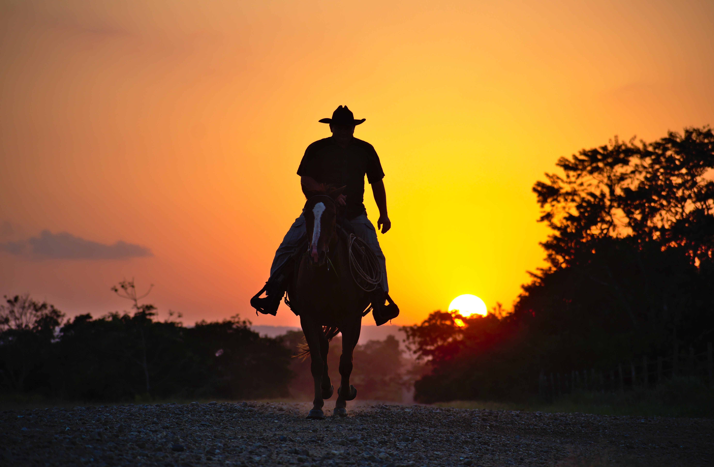

Das Wildpferd grast entspannt an einer Wasserstelle und lässt sich nicht von der Möve stören.
Manche Pferderassen werden umgangssprachlich ebenfalls als „Wildpferde“ bezeichnet.
Es sind aber aus wissenschaftlich-zoologischer Sicht keine Wildpferde, sondern verwilderte
Hauspferde
(z. B. der amerikanische Mustang) oder halbwild lebende Rassen wie das Dülmener Wildpferd.
Wildpferd grasend an einer Wasserstelle.
Viele Pferde werden fälschlicherweise als Wildpferde bezeichnet, zum Beispiel Mustangs oder das
Dülmener
Wildpferd.
Wunderschöner Sonneneinfall durch die Bäume im Wald. Cowboys auf Pferden halten andere Pferde
zusammen.
Infos über Cowboys:
Besonders wichtig für die Arbeit der Cowboys waren wendige und treue Pferde:
nur mit deren Hilfe konnten sie verloren gegangene Rinder einfangen, die Herde zusammenhalten und
bewachen
und die riesigen Distanzen überwinden.
Cowboys auf Pferden, die wendig sein mussten, um Rinder einzufangen und sehr ausdauernd über lange Strecken hinweg.

Hier eine Dülmener Wildpferde Herde

Die amerikanischen "Wildpferde", die Mustangs

Die Silhouette eines Cowboys auf seinem Pferd
Raucht ihr Pferd?"
"Nein, Wieso?"
"Dann brennt ihr Stall ..."
Sagt der Ehemann: "Ich hätte gern ein Pferd für meine Frau."
"Tut mir leid, Tauschgeschäfte machen wir nicht!"
Ein Pfarrer will sich ein Pferd kaufen.
Beim Pferdehändler: "Ich kann ihnen dieses Pferd wärmstens empfehlen. Bei 'Gott sei Dank' rennt es los und
bei
'Amen' bleibt es stehen."
"Gut, das nehme ich."
Der Pfarrer reitet los. Nach einiger Zeit merkt er, dass sein Pferd geradezu auf eine Klippe zurennt.
Vor Schreck kann er sich nicht mehr an das Wort erinnern, mit dem er das Pferd anhalten kann.
Also betet er: "... Amen!"
Das Pferd bleibt wie angewurzelt vor der Klippe stehen.
Daraufhin seufzt der Pfarrer: "Gott sei Dank!"...
Ein Reitschüler reitet auf dem Longierzirkel immer eckige Figuren.
Schreit der Reitlehrer: "Aus welchem Kaff kommen Sie denn?"
"Aus Reit im Winkl."